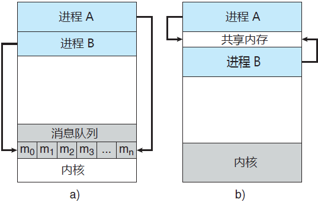
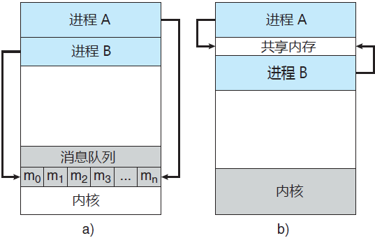

首页 > 编程笔记
进程间通信（IPC）：共享内存和消息队列原理详解
操作系统内的并发执行进程可以是独立的也可以是协作的：
提供环境允许进程协作，具有许多理由：
协作进程需要有一种进程间通信机制（简称 IPC），以允许进程相互交换数据与信息。进程间通信有两种基本模型：共享内存和消息传递（消息队列）：
图 1 给出了这两种模型的对比。

图 1 通信模型
上述两种模型在操作系统中都常见，而且许多系统也实现了这两种模型。消息传递对于交换较少数量的数据很有用，因为无需避免冲突。对于分布式系统，消息传递也比共享内存更易实现。共享内存可以快于消息传递，这是因为消息传递的实现经常采用系统调用，因此需要消耗更多时间以便内核介入。与此相反，共享内存系统仅在建立共享内存区域时需要系统调用；一旦建立共享内存，所有访问都可作为常规内存访问，无需借助内核。
对具有多个处理核系统的最新研究表明，在这类系统上，消息传递的性能要优于共享内存。共享内存会有高速缓存一致性问题，这是由共享数据在多个高速缓存之间迁移而引起的。随着系统的处理核的数量的日益增加，可能导致消息传递作为 IPC 的首选机制。
回忆一下，通常操作系统试图阻止一个进程访问另一进程的内存。共享内存需要两个或更多的进程同意取消这一限制，这样它们通过在共享区域内读出或写入来交换信息。数据的类型或位置取决于这些进程，而不是受控于操作系统。另外，进程负责确保它们不向同一位置同时写入数据。
为了说明协作进程的概念，我们来看一看生产者-消费者问题，这是协作进程的通用范例。生产者进程生成信息，以供消费者进程消费。例如，编译器生成的汇编代码可供汇编程序使用，而且汇编程序又可生成目标模块以供加载程序使用。
生产者-消费者问题同时还为客户机-服务器范例提供了有用的比喻。通常，将服务器当作生产者，而将客户机当作消费者。例如，一个 Web 服务器生成（提供）HTML 文件和图像，以供请求资源的 Web 客户浏览器使用（读取）。
解决生产者-消费者问题的方法之一是采用共享内存。为了允许生产者进程和消费者进程并发执行，应有一个可用的缓冲区，以被生产者填充和被消费者清空。这个缓冲区驻留在生产者进程和消费者进程的共享内存区域内。当消费者使用一项时，生产者可产生另一项。生产者和消费者必须同步，这样消费者不会试图消费一个尚未生产出来的项。
缓冲区类型可分两种：
下面深入分析，有界缓冲区如何用于通过共享内存的进程间通信。以下变量驻留在由生产者和消费者共享的内存区域中：
生产者进程和消费者进程的代码为：
消息传递提供一种机制，以便允许进程不必通过共享地址空间来实现通信和同步。对分布式环境（通信进程可能位于通过网络连接的不同计算机），这特别有用。
例如，可以设计一个互联网的聊天程序以便聊天参与者通过交换消息相互通信。消息传递工具提供至少两种操作：send(message) 和 receive(message)。
进程发送的消息可以是定长的或变长的。如果只能发送定长消息，那么系统级实现就简单。不过，这一限制使得编程任务更加困难。相反，变长消息要求更复杂的系统级实现，但是编程任务变得更为简单。在整个操作系统设计中，这种折中很常见。
如果进程 P 和 Q 需要通信，那么它们必须互相发送消息和接收消息：它们之间要有通信链路。该链路的实现有多种方法。这里不关心链路的物理实现（如共享内存、硬件总线或网络等），而只关心链路的逻辑实现。
这里有几个方法，用于逻辑实现链路和操作 send()/receive()：
下面研究这些特征的相关问题。
对于直接通信，需要通信的每个进程必须明确指定通信的接收者或发送者。采用这种方案，原语 send() 和 receive() 定义如下：
这种方案的通信链路具有以下属性：
这种方案展示了寻址的对称性，即发送和接收进程必须指定对方，以便通信。这种方案的一个变形采用寻址的非对称性，即只要发送者指定接收者，而接收者不需要指定发送者。采用这种方案，原语 send() 和 receive() 的定义如下：
这两个方案（对称和非对称的寻址）的缺点是：生成进程定义的有限模块化。更改进程的标识符可能需要分析所有其他进程定义。所有旧的标识符的引用都应找到，以便修改成为新标识符。通常，任何这样的硬编码技术（其中标识符需要明确指定），与下面所述的采用间接的技术相比要差。
在间接通信中，通过邮箱或端口来发送和接收消息。邮箱可以抽象成一个对象，进程可以向其中存放消息，也可从中删除消息，每个邮箱都有一个唯一的标识符。
例如，POSIX 消息队列采用一个整数值来标识一个邮箱。一个进程可以通过多个不同邮箱与另一个进程通信，但是两个进程只有拥有一个共享邮箱时才能通信。原语 send() 和 receive() 定义如下：
对于这种方案，通信链路具有如下特点：
现在假设进程 P1、P2 和 P3 都共享邮箱 A。进程 P1 发送一个消息到 A，而进程 P2 和 P3 都对 A 执行 receive()。哪个进程会收到 P1 发送的消息？
答案取决于所选择的方案：
邮箱可以为进程或操作系统拥有。如果邮箱为进程拥有（即邮箱是进程地址空间的一部分)，那么需要区分所有者（只能从邮箱接收消息）和使用者（只能向邮箱发送消息）。由于每个邮箱都有唯一的标识符，所以关于谁能接收发到邮箱的消息没有任何疑问。当拥有邮箱的进程终止，那么邮箱消失。任何进程后来向该邮箱发送消息，都会得知邮箱不再存在。
与此相反，操作系统拥有的邮箱是独立存在的；它不属于某个特定进程。因此，操作系统必须提供机制，以便允许进程进行如下操作：
创建新邮箱的进程缺省为邮箱的所有者。开始时，所有者是唯一能通过该邮箱接收消息的进程。不过，通过系统调用，拥有权和接收特权可以传给其他进程。当然，这样可以导致每个邮箱具有多个接收者。
不同组合的 send() 和 receive() 都有可能。当 send() 和 receive() 都是阻塞的，则在发送者和接收者之间就有一个交会。当采用阻塞的 send() 和 receive()时，生产者-消费者问题的解决就简单了。生产者仅需调用阻塞 send() 并且等待，直到消息被送到接收者或邮箱。同样，当消费者调用 receive() 时，它会阻塞直到有一个消息可用。这种情况如下代码所示：
零容量情况称为无缓冲的消息系统，其他情况称为自动缓冲的消息系统。
- 如果一个进程不能影响其他进程或受其他进程影响，那么该进程是独立的，换句话说，不与任何其他进程共享数据的进程是独立的；
- 如果一个进程能影响其他进程或受其他进程所影响，那么该进程是协作的。换句话说，与其他进程共享数据的进程为协作进程。
提供环境允许进程协作，具有许多理由：
- 信息共享：由于多个用户可能对同样的信息感兴趣（例如共享文件），所以应提供环境以允许并发访问这些信息。
- 计算加速：如果希望一个特定任务快速运行，那么应将它分成子任务，而每个子任务可以与其他子任务一起并行执行。注意，如果要实现这样的加速，那么计算机需要有多个处理核。
- 模块化：可能需要按模块化方式构造系统，即将系统功能分成独立的进程或线程。
- 方便：即使单个用户也可能同时执行许多任务。例如，用户可以并行地编辑、收听音乐、编译。
协作进程需要有一种进程间通信机制（简称 IPC），以允许进程相互交换数据与信息。进程间通信有两种基本模型：共享内存和消息传递（消息队列）：
- 共享内存模型会建立起一块供协作进程共享的内存区域，进程通过向此共享区域读出或写入数据来交换信息。
- 消息传递模型通过在协作进程间交换消息来实现通信。
图 1 给出了这两种模型的对比。

图 1 通信模型
对具有多个处理核系统的最新研究表明，在这类系统上，消息传递的性能要优于共享内存。共享内存会有高速缓存一致性问题，这是由共享数据在多个高速缓存之间迁移而引起的。随着系统的处理核的数量的日益增加，可能导致消息传递作为 IPC 的首选机制。
共享内存系统
采用共享内存的进程间通信，需要通信进程建立共享内存区域。通常，共享内存区域驻留在创建共享内存段的进程地址空间内。其他希望使用这个共享内存段进行通信的进程应将其附加到自己的地址空间。回忆一下，通常操作系统试图阻止一个进程访问另一进程的内存。共享内存需要两个或更多的进程同意取消这一限制，这样它们通过在共享区域内读出或写入来交换信息。数据的类型或位置取决于这些进程，而不是受控于操作系统。另外，进程负责确保它们不向同一位置同时写入数据。
为了说明协作进程的概念，我们来看一看生产者-消费者问题，这是协作进程的通用范例。生产者进程生成信息，以供消费者进程消费。例如，编译器生成的汇编代码可供汇编程序使用，而且汇编程序又可生成目标模块以供加载程序使用。
生产者-消费者问题同时还为客户机-服务器范例提供了有用的比喻。通常，将服务器当作生产者，而将客户机当作消费者。例如，一个 Web 服务器生成（提供）HTML 文件和图像，以供请求资源的 Web 客户浏览器使用（读取）。
解决生产者-消费者问题的方法之一是采用共享内存。为了允许生产者进程和消费者进程并发执行，应有一个可用的缓冲区，以被生产者填充和被消费者清空。这个缓冲区驻留在生产者进程和消费者进程的共享内存区域内。当消费者使用一项时，生产者可产生另一项。生产者和消费者必须同步，这样消费者不会试图消费一个尚未生产出来的项。
缓冲区类型可分两种：
- 无界缓冲区没有限制缓冲区的大小。消费者可能不得不等待新的项，但生产者总是可以产生新项。
- 有界缓冲区假设固定大小的缓冲区。对于这种情况，如果缓冲区空，那么消费者必须等待；并且如果缓冲区满，那么生产者必须等待。
下面深入分析，有界缓冲区如何用于通过共享内存的进程间通信。以下变量驻留在由生产者和消费者共享的内存区域中：
#define BUFFER_SIZE 10
typedef struct {
...
}item；
item buffer [BUFFER_SIZE];
int in = 0;
int out = 0;
共享 buffer 的实现采用一个循环数组和两个逻辑指针：in 和 out。变量 in 指向缓冲区的下一个空位；变量 out 指向缓冲区的第一个满位。当 in == out 时，缓冲区为空；当 (in + 1)%BUFFER SIZE == out 时，缓冲区为满。生产者进程和消费者进程的代码为：
//生产者进程
while (true) {
/* produce an item in next .produced */
while (((in + 1) %BUFFER_SIZE) == out)
;/* do nothing */
buffer [in] = next_produced;
in = (in + 1) % BUFFER.SIZE;
}
//消费者进程
item next_consumed;
while (true) {
while (in == out)
;/* do nothing */
next_consumed = buffer[out];
out = (out + 1) %BUFFER_SIZE;
/* consume the item in next-consumed */
}
生产者进程有一个局部变量 next_produced，以便存储生成的新项；消费者进程有一个局部变量 next_consumed，以便存储所要使用的新项。消息传递系统（消息队列）
前面讲解了协作进程如何可以通过共享内存进行通信。此方案要求这些进程共享一个内存区域，并且应用程序开发人员需要明确编写代码，以访问和操作共享内存。达到同样效果的另一种方式是，操作系统提供机制，以便协作进程通过消息传递功能进行通信。消息传递提供一种机制，以便允许进程不必通过共享地址空间来实现通信和同步。对分布式环境（通信进程可能位于通过网络连接的不同计算机），这特别有用。
例如，可以设计一个互联网的聊天程序以便聊天参与者通过交换消息相互通信。消息传递工具提供至少两种操作：send(message) 和 receive(message)。
进程发送的消息可以是定长的或变长的。如果只能发送定长消息，那么系统级实现就简单。不过，这一限制使得编程任务更加困难。相反，变长消息要求更复杂的系统级实现，但是编程任务变得更为简单。在整个操作系统设计中，这种折中很常见。
如果进程 P 和 Q 需要通信，那么它们必须互相发送消息和接收消息：它们之间要有通信链路。该链路的实现有多种方法。这里不关心链路的物理实现（如共享内存、硬件总线或网络等），而只关心链路的逻辑实现。
这里有几个方法，用于逻辑实现链路和操作 send()/receive()：
- 直接或间接的通信;
- 同步或异步的通信;
- 自动或显式的缓冲;
下面研究这些特征的相关问题。
命名
需要通信的进程应有一个方法，以便互相引用。它们可以使用直接或间接的通信。对于直接通信，需要通信的每个进程必须明确指定通信的接收者或发送者。采用这种方案，原语 send() 和 receive() 定义如下：
- send(P,message)：向进程P发送 message。
- receive(Q,message)：从进程 Q 接收 message。
这种方案的通信链路具有以下属性：
- 在需要通信的每对进程之间，自动建立链路。进程仅需知道对方身份就可进行交流。
- 每个链路只与两个进程相关。
- 每对进程之间只有一个链路。
这种方案展示了寻址的对称性，即发送和接收进程必须指定对方，以便通信。这种方案的一个变形采用寻址的非对称性，即只要发送者指定接收者，而接收者不需要指定发送者。采用这种方案，原语 send() 和 receive() 的定义如下：
- send(P，message)：向进程 P 发送 message。
- receive(id, message)：从任何进程，接收 message，这里变量 id 被设置成与其通信进程的名称。
这两个方案（对称和非对称的寻址）的缺点是：生成进程定义的有限模块化。更改进程的标识符可能需要分析所有其他进程定义。所有旧的标识符的引用都应找到，以便修改成为新标识符。通常，任何这样的硬编码技术（其中标识符需要明确指定），与下面所述的采用间接的技术相比要差。
在间接通信中，通过邮箱或端口来发送和接收消息。邮箱可以抽象成一个对象，进程可以向其中存放消息，也可从中删除消息，每个邮箱都有一个唯一的标识符。
例如，POSIX 消息队列采用一个整数值来标识一个邮箱。一个进程可以通过多个不同邮箱与另一个进程通信，但是两个进程只有拥有一个共享邮箱时才能通信。原语 send() 和 receive() 定义如下：
- send(A, message)：向邮箱 A 发送 message。
- receive(A，message)：从邮箱 A 接收 message。
对于这种方案，通信链路具有如下特点：
- 只有在两个进程共享一个邮箱时，才能建立通信链路。
- 一个链路可以与两个或更多进程相关联。
- 两个通信进程之间可有多个不同链路，每个链路对应于一个邮箱。
现在假设进程 P1、P2 和 P3 都共享邮箱 A。进程 P1 发送一个消息到 A，而进程 P2 和 P3 都对 A 执行 receive()。哪个进程会收到 P1 发送的消息？
答案取决于所选择的方案：
- 允许一个链路最多只能与两个进程关联。
- 允许一次最多一个进程执行操作 receive ()。
- 允许系统随意选择一个进程以便接收消息（即进程 P2 和 P3 两者之一都可以接收消息，但不能两个都可以）。系统同样可以定义一个算法来选择哪个进程是接收者（如轮转，进程轮流接收消息）。系统可以让发送者指定接收者。
邮箱可以为进程或操作系统拥有。如果邮箱为进程拥有（即邮箱是进程地址空间的一部分)，那么需要区分所有者（只能从邮箱接收消息）和使用者（只能向邮箱发送消息）。由于每个邮箱都有唯一的标识符，所以关于谁能接收发到邮箱的消息没有任何疑问。当拥有邮箱的进程终止，那么邮箱消失。任何进程后来向该邮箱发送消息，都会得知邮箱不再存在。
与此相反，操作系统拥有的邮箱是独立存在的；它不属于某个特定进程。因此，操作系统必须提供机制，以便允许进程进行如下操作：
- 创建新的邮箱。
- 通过邮箱发送和接收消息。
- 删除邮箱。
创建新邮箱的进程缺省为邮箱的所有者。开始时，所有者是唯一能通过该邮箱接收消息的进程。不过，通过系统调用，拥有权和接收特权可以传给其他进程。当然，这样可以导致每个邮箱具有多个接收者。
同步
进程间通信可以通过调用原语 send() 和 receive() 来进行。实现这些原语有不同的设计方案。消息传递可以是阻塞或非阻塞，也称为同步或异步：- 阻塞发送：发送进程阻塞，直到消息由接收进程或邮箱所接收。
- 非阻塞发送：发送进程发送消息，并且恢复操作。
- 阻塞接收：接收进程阻塞，直到有消息可用。
- 非阻塞接收：接收进程收到一个有效消息或空消息。
不同组合的 send() 和 receive() 都有可能。当 send() 和 receive() 都是阻塞的，则在发送者和接收者之间就有一个交会。当采用阻塞的 send() 和 receive()时，生产者-消费者问题的解决就简单了。生产者仅需调用阻塞 send() 并且等待，直到消息被送到接收者或邮箱。同样，当消费者调用 receive() 时，它会阻塞直到有一个消息可用。这种情况如下代码所示：
//采用消息传递的生产者进程
message next_produced;
while (true) {
/* produce an item in next_produced */
send (next_produced);
}
//采用消息队列的消费者进程
message next_consumed;
while (true) {
receive (next_consumed);
/* consume the item in next .consumed */
}
缓存
不管通信是直接的还是间接的，通信进程交换的消息总是驻留在临时队列中。简单地讲，队列实现有三种方法：- 零容量：队列的最大长度为 0。因此，链路中不能有任何消息处于等待。对于这种情况，发送者应阻塞，直到接收者接收到消息。
- 有限容量：队列长度为有限的 n。因此，最多只能有 n 个消息驻留其中。如果在发送新消息时队列未满，那么该消息可以放在队列中（或者复制消息或者保存消息的指针），且发送者可以继续执行而不必等待。如果链路已满，那么发送者应阻塞，直到队列空间有可用的为止。
- 无限容量：队列长度可以无限，因此，不管多少消息都可在其中等待。发送者从不阻塞。
零容量情况称为无缓冲的消息系统，其他情况称为自动缓冲的消息系统。
关注公众号「站长严长生」，在手机上阅读所有教程，随时随地都能学习。内含一款搜索神器，免费下载全网书籍和视频。

微信扫码关注公众号